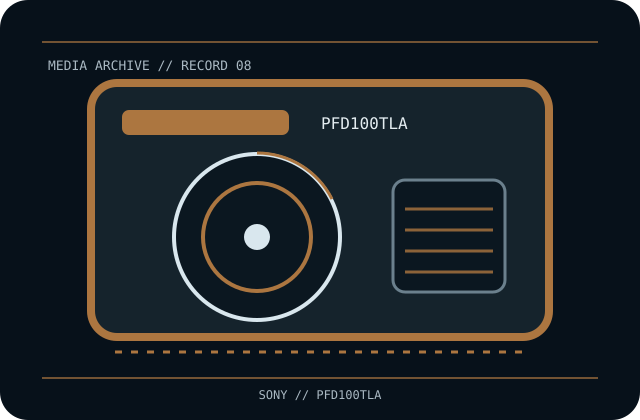

[ REMOVABLE MEDIA // OPTICAL CARTRIDGE ]
Sony XDCAM Professional Disc 100 GB Triple Layer (PFD100TLA)
Sony XDCAM Professional Disc, triple-layer rewritable phase-change optical medium in protective cartridge; exact media SKU PFD100TLA. This record identifies the media only; drive, host interface, firmware, software and any enclosure are separate.

EXACT SKU: Sony PFD100TLA. The record distinguishes nominal uncompressed capacity from any compressed estimate and documents generation-specific host compatibility.
Format generation, capacity and compatible drives
| Manufacturer / exact SKU | Sony PFD100TLA |
|---|---|
| Format / generation | Sony XDCAM Professional Disc, triple-layer rewritable phase-change optical medium in protective cartridge; exact media SKU PFD100TLA. |
| Native capacity | 100 GB nominal native capacity, triple layer. |
| Compressed capacity | Not applicable as a media compression rating; any file compression is separate, content-dependent software behavior. |
| Compatible drive generations | XDCAM Professional Disc devices qualified for triple-layer 100 GB media. PDW-U2 with required firmware and PDW-U4-generation drives are documented candidates; legacy single-/dual-layer-only devices, including PDW-U1, must not be presumed compatible. Verify the exact deck, firmware and software. |
| Interface and scope | The cartridge/disc has no direct host-computer interface. The compatible drive supplies its own SAS, Fibre Channel, SCSI, USB or other host connection; check the exact drive specification and driver/software chain. |
| Compatibility caveat | Triple-layer PFD100TLA is not the dual-layer PFD50DLA or quad-layer PFD128QLW. A drive that accepts a Professional Disc shell may still lack the optical/firmware generation needed for this layer count. |
Optical-cartridge handling and preservation
Keep the disc enclosed in its cartridge and case; avoid dust, direct sun, heat, humidity extremes, impact and surface contact. Use only a listed triple-layer-compatible XDCAM drive and follow its eject/cleaning procedure. Preserve original labels/provenance; checksum, independently back up and test restoration.
- Document the exact printed model, serial/batch or date code, write-protect/WORM status and source of the medium.
- For valuable data, keep at least two independently verified copies, record checksums, test restoration and plan migration before compatible hardware becomes unavailable.
Model-specific preservation and compatibility notes
Preservation note: a nominal capacity or WORM property does not establish future readability; retain supported drives, software and independent copies.
Triple-layer PFD100TLA is not the dual-layer PFD50DLA or quad-layer PFD128QLW. A drive that accepts a Professional Disc shell may still lack the optical/firmware generation needed for this layer count. Never infer interoperability from a similar cartridge shell, connector, brand or family name; confirm drive-generation support in the exact manufacturer's manual.
Manufacturer and archival references
- Sony Support — PFD100TLAManufacturer support record for the exact disc model.
- Sony — Professional Disc lineup catalogueManufacturer-hosted optical media generation/capacity reference.
- Sony Professional — PDW-U4 disc driveManufacturer drive page for a Professional Disc generation with triple-layer support; confirm each model’s current documentation.
Capacity, compatibility and handling are specific to this model and its supported drive generation. For legacy equipment, preserve the manual and test an end-to-end read before relying on the cartridge for migration.